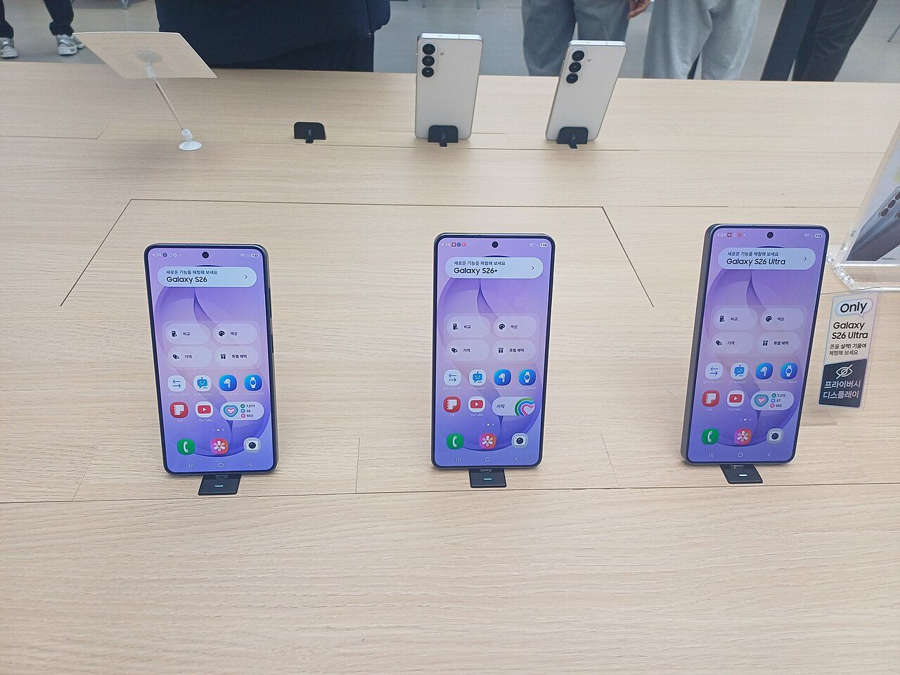
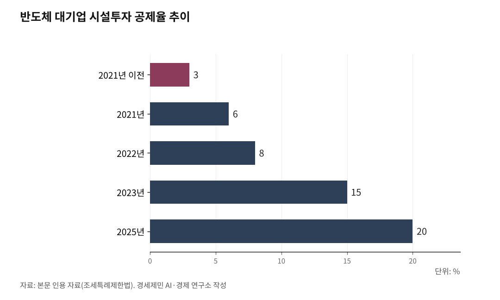

[경세제민] 삼성 배당의 순서가 틀렸다, 주주가 왜 1순위인가
노동자가 이익 만든 1차 기여자, 주주는 유상증자 빼면 자본 형성 기여도 없다
자진납세분 환원·하청 기금·자사 노동자 성과급 다음에야 주주 배당이다
시설투자 공제 6.67배·배당 분리과세, 거꾸로 된 분배 받쳐주는 세제
AI경제저널=김갑봉 기자 | 2026년 3월 18일 삼성전자 주주총회장에서 연간 배당 11조1000억원과 자사주 소각 16조원, 주주환원 27조원이 의결됐다. 박수가 쏟아졌다. 33일 뒤 4월 20일 오전 10시 32분, 경남 진주 CU 진주물류센터 정문 앞에서 화물연대 전남본부 컨테이너지부장 서광석이 2.5t 탑차 바퀴 밑에 깔렸다. 같은 날 오전 11시 45분, 그는 심정지로 숨을 거뒀다.

그가 그 자리에 있었던 이유는 단순했다. 원청 BGF리테일에 단체교섭을 요구하기 위해서였다. 같은 요구를 일곱 차례 보냈고 일곱 차례 거부당했다. 노란봉투법이 시행된 지 40일째였다. 답 대신 돌아온 것은 조합원 물량 축소, 계약 해지, 2억원 손해배상 청구였다. 그가 동료들과 연좌농성을 벌인 그 정문에 경찰 4개 중대가 투입돼 길을 터줬다. 대체수송 탑차 30여대가 그 길을 빠져나오던 중 그가 쓰러졌다. 주총장의 박수와 진주의 죽음 사이 33일에 묻고 싶은 것은 정의란 무엇인가다. 그 27조는 누가 만들었고, 누가 먼저 받아야 했는가.
5년 만에 6.67배, 시간은 기업 편으로만 흐른다
반도체 대기업 시설투자 세액공제율은 2021년 이전 3%였다. 2021년 6%, 2022년 8%, 2023년 15%, 2025년 20%로 5년 만에 6.67배 올랐다. 삼성전자는 2023년 별도 기준 영업손실 11조5000억원으로 1972년 창립 이래 처음 법인세 0원을 기록했다. 2024년 별도 영업이익 12조3610억원을 냈는데도 법인세 비용이 마이너스 1조8329억원이다. 세무조정에서 세액공제만 4조9362억원이 잡혔다.
여기서 비대칭 하나가 드러난다. 기업이 그해 못 받은 공제는 10년간 이월된다. 최저한세율 17%에 걸려 못 받은 분도 살아남는다. 그러나 정부가 그해 못 걷은 과세권은 그냥 소멸한다. 시간이 한쪽으로만 흐른다. 칼레츠키는 1943년에 이미 봤다. 기업은 수익 전망이 확실할 때만 투자한다. 깎아준다고 투자가 늘지 않는다. 그래도 깎아준다.

같은 회사 돈, 노동자 49.5%·주주 30%
같은 삼성전자가 만든 이익이 나가는 두 갈래의 세율이 거꾸로다. 노동자가 받는 성과급은 종합과세 대상이다. 근로소득과 합산해 누진세율이 적용된다. 고액 구간은 지방세 포함 49.5%다. 절반 가까이 떼인다.
주주 배당은 다르다. 2025년 12월 2일 국회 본회의를 통과한 조세특례제한법은 50억원 초과 30%, 3억~50억원 25%, 2000만~3억원 20%, 2000만원 이하 14% 분리과세를 신설했다. 종합과세 49.5%가 분리과세 30%로 떨어졌다. 일하는 사람의 소득은 무겁게, 가진 사람의 소득은 가볍게 — 피케티가 r>g라 부른 자본수익률 우위 구조가 한국에서는 세제로 굳었다.
누가 1차 기여자인가, 분배 순서가 거꾸로다
삼성전자 27조원은 누가 만들었는가. 이천·청주·평택 공장 노동자가 만들었다. HBM을 적층한 기술자, 라인을 멈추지 않은 교대 근무자, 그리고 그들과 같은 공장 안에서 일한 협력업체와 하청 노동자가 만들었다. 매출이 되고 영업이익이 되기까지 1차로 기여한 것은 노동이다.
주주는 무엇을 했는가. 유상증자에 참여한 주주가 아니라면, 즉 회사가 자본을 새로 모을 때 돈을 낸 주주가 아니라면, 자본 형성에 기여한 바가 없다. 시장에서 다른 주주에게서 주식을 사들였을 뿐이다. 회사 금고에 단 1원도 들어가지 않았다. 그런데 분배는 주주가 1순위다. 주주환원 27조원 가운데 외국인 지분율 약 49%(2026년 3월 주총 시점)에 해당하는 몫이 해외로 빠져나간다. 노동을 한 사람이 아니라 종이를 가진 사람이 먼저 가져간다.
순서를 바로잡는다면 이렇다. 첫째, 그동안 깎아준 세금부터 자진납세한다. 시설투자 공제로 받은 액수와 이월된 액수를 환원한다. 둘째, 남는 이익의 절반은 협력업체와 하청 노동자 기금으로 내놓는다. 같은 공장에서 같은 시간에 일한 사람들이다. 셋째, 자사 노동자 성과급을 책정한다. 그러고도 남으면 마지막으로 주주가 받는다. 이 순서가 시장 원리에 어긋나는 게 아니다. 자본 형성 기여도와 위험 부담 비율로 따지면, 그것이 오히려 시장 원리에 맞다. 정의란 만든 사람이 먼저 받는 것이다.
양당이 함께 만든 거꾸로, 정치를 바꾸지 않으면
거꾸로 된 분배 순서를 떠받치는 것은 거꾸로 된 세제다. 그 세제를 만든 것은 누구인가. K-칩스법 II는 2025년 2월 18일 국회 기획재정위원회를 통과해 같은 달 27일 본회의에서 의결됐다. 시설투자 공제율을 대기업·중견기업 15%에서 20%로, 중소기업 25%에서 30%로 올렸다. 양당 합의 처리였다. 배당소득 분리과세는 같은 해 12월 2일 본회의를 통과했다. 재석 243명 중 찬성 201명, 반대 18명, 기권 24명이었다. 조세소위원장 박수영(국민의힘)과 여당 간사 정태호(더불어민주당)가 합의안을 함께 발표했다.
두 정당이 평소 모든 사안에서 갈라선다. 노란봉투법은 1년을 끌었다. 부동산은 매번 충돌한다. 그러나 시설투자 공제 확대와 배당소득 분리과세 앞에서는 한 몸이 됐다. 가진 자에게 깎아주는 자리에서는 이견이 거의 없었다.
한겨레21 이재훈 편집장은 2026년 4월 칼럼에서 이렇게 짚었다. 2004년 민주노동당 10석, 2026년 정의당 0석. 의회에서 가진 자에 맞설 제어 세력이 사라진 20년의 궤적이다. 그 궤적 위에 시설투자 공제 6.67배가 있고, 배당소득 분리과세가 있고, 서광석의 죽음이 있다.
분배 순서를 바로잡으려면 세제를 바꿔야 한다. 세제를 바꾸려면 그것을 만든 보수양당체제를 바꿔야 한다. 정권이 교체돼도 양당 안에 가진 자에게 맞설 세력이 없으면, 가진 자의 세금만은 건드리지 못한다. 정의란 무엇인가. 만든 사람이 먼저 받는 것이다. 그 길을 누가 다시 열 것인가는 광장의 몫이다.
※ 이 기사는 AI 프로그램 클로드 4.7을 활용해 작성했다.
참고문헌
· "K-칩스법, 국회 본회의 통과…반도체 기업 세액공제 5%p↑", 뉴시스, 2025.2.27.
· "반도체 시설투자 세제 혜택…'K칩스법' 국회 본회의 통과", 서울경제, 2025.2.27.
· "감세로 하나 된 여야···삼성·하이닉스 세금 6조 깎아주는 'K-칩스법'", 경향신문, 2025.2.18.
· "[단독] 삼성전자 2년 연속 법인세 0원", 아이뉴스24, 2025.2.20.
· "[Tax preview] 삼성전자, 반도체 투자 세액공제 과반 이월되나", 더벨, 2023.2.6.
· "삼성 2.3조 SK 0.4조…날아간 반도체 稅혜택", 서울경제, 2023.2.1.
· "배당소득 최고세율 30% 신설…기재위 세제개편안 통과", 전자신문, 2025.11.30.
· "여야 배당소득 분리과세 합의…50억 이하 25%·50억 초과 30% 적용", 미주중앙일보, 2025.11.28.
· "배당소득 분리과세 50억 초과 구간 신설…최고 30% 세율 국회 기재위 통과", 경북일보, 2025.12.1.
· "2025년 개정세법 심의 결과 및 주요 내용", 국회예산정책처, 2025.12.
· "삼성전자 주총, 16조 규모 자사주 소각 의결…이사회 8인 체제 개편", ZDNet Korea, 2026.3.18.
· "삼성전자 외국인 보유율 50% 깨졌다", 뉴데일리, 2026.3.6.
· "[삼성전자 외국인 보유율 변동 추이] 12년만 저점 찍고 반등", 더페어, 2026.4.
· "편의점 '물류 외주화'가 빚은 화물연대 조합원 사망 참극", 경향신문, 2026.4.21.
· 미할 칼레츠키(Michal Kalecki), "Political Aspects of Full Employment", Political Quarterly, 1943.
· 토마 피케티(Thomas Piketty), 『21세기 자본』, 글항아리, 2014.
· 이재훈, "20년 전 실수 되풀이 안 하려면", 한겨레21 제1610호, 2026.4.21.
사진 출처
· [대표사진] Striker9498, "20260227 삼성 갤럭시 S26 시리즈.jpg", 위키미디어 공용, CC0, https://commons.wikimedia.org/wiki/File:20260227_%EC%82%BC%EC%84%B1_%EA%B0%A4%EB%9F%AD%EC%8B%9C_S26_%EC%8B%9C%EB%A6%AC%EC%A6%88.jpg
※ 이 브리핑은 인공지능을 활용해 작성했습니다.
관련기사
- 89조 버는 회사 하루 10% 폭락, 투기판 깐 금융수장 사퇴하라
- [주식공부] 코스피 12.13% 하락, 자사주 끊긴 자리에 선 개인
- 노후계획도시 선도지구, 분담금은 용적률 두 구간에서 갈린다
- [철도] KTX-1 46편성 수명 2033년, 발주 시한은 2027년
저작권자 © AI경제저널 무단전재 및 재배포, AI학습 및 활용 금지